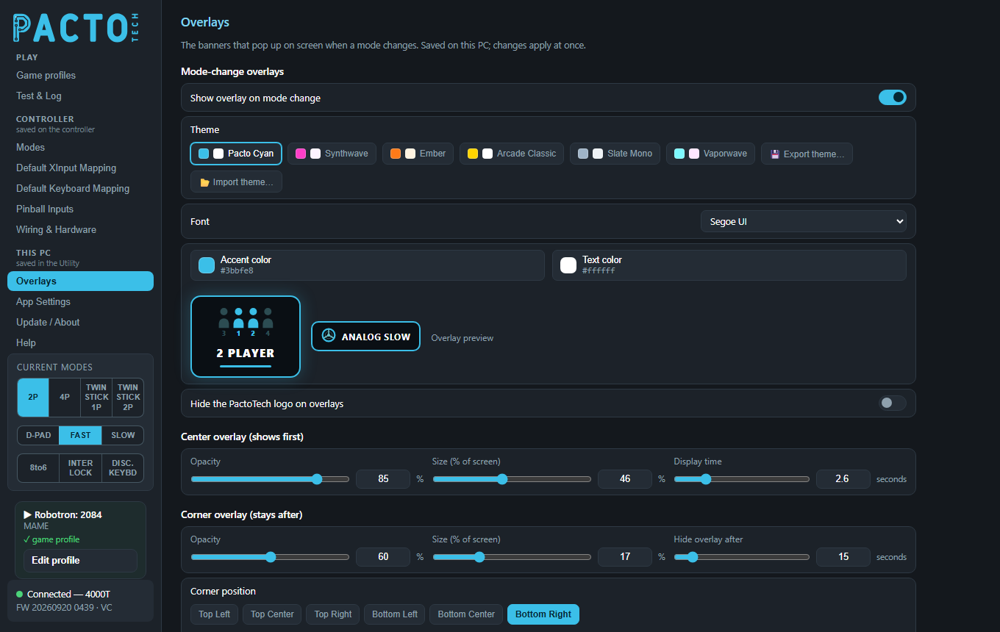
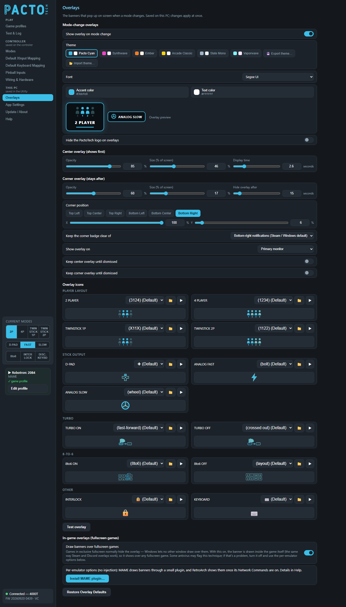

The banners that pop up on screen when a mode changes: whether they show, how they look, where they appear and how long they stay.

Overlays is in the This PC group of the sidebar: everything here is saved on your PC as soon as you change it. There is no Save button, and nothing here is written to the controller.
When the mode changes (for example from 2 PLAYER to 4 PLAYER, or turbo on or off), the Utility shows a banner on screen. First a large center overlay appears. After a moment it shrinks into a small corner overlay (the "badge"), which stays on screen for a while longer.
| Setting | What it does |
|---|---|
| Show overlay on mode change | Turns the banners on or off. It is on by default. |
| Theme | Ready-made colour sets: Pacto Cyan, Synthwave, Ember, Arcade Classic, Slate Mono
and Vaporwave. Export theme… saves your current look (colours, font, logo setting and icons) to a .pactotheme file. Your own icon images or videos are packed into the file too, so you can share it.Import theme… loads a .pactotheme file. Imported themes appear next to the built-in ones,
and you can remove one with its ✕. |
| Font | The font used on both overlays. The list contains common Windows fonts, and each one is shown in its own style. |
| Accent color / Text color | Click a colour chip to open its picker. You can choose a swatch (press and drag across the swatches to try them quickly), use the Windows colour picker, or type a Hex or R/G/B value. Choosing your own colour means you are no longer using a preset theme. |
| Overlay preview | Next to the colour chips: a small version of the center overlay and the corner badge in your current colours and font. |
| Hide the PactoTech logo on overlays | Removes the Pacto Tech logo from the mode-change banners. |
| Setting | Range | What it does |
|---|---|---|
| Center overlay (shows first) | ||
| Opacity | 20–100 % | How see-through the center overlay is. |
| Size (% of screen) | 20–80 % | How big the center overlay is. |
| Display time | 0.5–10 seconds | How long it stays before it shrinks to the corner. |
| Corner overlay (stays after) | ||
| Opacity | 20–100 % | How see-through the corner badge is. |
| Size (% of screen) | 8–40 % | How big the corner badge is. |
| Hide overlay after | 3–120 seconds | How long the badge stays before it disappears. This greys out when Keep corner overlay until dismissed is on. |
Each slider has a number box beside it, so you can type an exact value if you prefer.
| Setting | What it does |
|---|---|
| Corner position | Six quick positions (Top Left, Top Center, Top Right, Bottom Left, Bottom Center, Bottom Right), plus X and Y sliders for fine placement. X 0 % is the left edge and 100 % is the right edge. Y 0 % is the bottom edge and 100 % is the top edge. The default is bottom right, raised slightly to clear the taskbar. |
| Keep the corner badge clear of | Steam and Windows show a "controller connected" notification when your board reconnects, which happens at the same moment as a mode change. Pick the corner those notifications use. If your badge is set to that corner, it moves to the opposite (top or bottom) edge so the two don't overlap. Choose Nothing (badge stays where it is set) to turn this off. |
| Show overlay on | Primary monitor, a specific monitor (listed with its resolution), or All monitors. |
| Keep center overlay until dismissed | The center overlay stays until you click it. This is useful on a separate status screen. |
| Keep corner overlay until dismissed | The badge stays until you click it. |
Every mode has its own icon. The icons are grouped as Player layout, Stick output, Turbo, 8-to-6 and Other (Interlock and Keyboard). For each mode you can:
The Test overlay button below the icons shows a sample banner using all your current settings.

Some games run in exclusive fullscreen (MAME's default on Windows), and Windows doesn't let any other window draw on top of them, including the normal overlay. Borderless or windowed fullscreen is fine. You have two ways to see banners in those games.
| Option | What it does |
|---|---|
| Draw banners over fullscreen games | On by default. The banner is drawn inside the game's own picture, the same way the Steam and Discord overlays work, so it appears over any fullscreen game. Some antivirus programs may flag this technique. If that causes a problem, turn it off and use the per-emulator options instead. The board and its controls are never affected; this is only how the banner is drawn on the PC. |
| Install MAME plugin… | This option doesn't use injection. Pick your MAME folder (the one that contains
the MAME .exe; for front-end bundles such as CoinOps or LaunchBox that is the bundled
emulators\mame folder). The Utility adds a small plugin called pactooverlay to that folder's
plugins folder, and MAME then draws the banners itself, in every video mode. Restart MAME afterwards.
If you use more than one copy of MAME, repeat this for each one. If your mame.ini points
pluginspath somewhere else, the Utility warns you. To turn the plugin off, use MAME's Plugins menu or
delete the folder. |
| RetroArch | There's no button for RetroArch. Turn on Settings → Network → Network Commands in RetroArch (port 55355), and the Utility sends mode banners to RetroArch's own on-screen messages, visible in any fullscreen mode. |
Other emulators and games in exclusive fullscreen can only show banners through Draw banners over fullscreen games; otherwise run them in borderless windowed mode. The normal overlay keeps covering the desktop and front-end menus either way.
The Restore Overlay Defaults button at the bottom of the page asks you to confirm, then puts the banners and their look back to their defaults straight away: showing the overlay, theme, font, colours, the logo setting, the center and corner overlay sliders, the keep-until-dismissed switches, corner position, the notification corner, the monitor and Draw banners over fullscreen games.